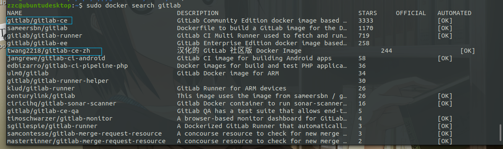

Docker 安装 Gitlab
镜像查找及拉取
查找镜像
sudo docker search gitlab
gitlab-ce 一般是最新版本，也可以选择汉化版 gitlab-ce-zh，现在官方版本也有中文支持，之前的汉化版版本比较旧了

拉取镜像
sudo docker pull gitlab/gitlab-ce
运行
sudo docker run -d -p 443:443 -p 80:80 -p 222:22 --name gitlab --restart always \
-v /home/gitlab/config:/etc/gitlab -v /home/gitlab/logs:/var/log/gitlab \
-v /home/gitlab/data:/var/opt/gitlab gitlab/gitlab-ce
# -d：后台运行
# -p：将容器内部端口向外映射；一般本机22号端口被ssh占用，所以映射到222
# --name：命名容器名称
# -v：将容器内数据文件夹或者日志、配置等文件夹挂载到宿主机指定目录
# --restart always docker 主机启动的时候自动启动容器
运行成功后出现一串字符串，容器已经在后台启动
等容器启动完成，浏览器输入127.0.0.1，会提示设置root密码
记住改完密码再做后续配置
如果先做了配置，发现不知道密码，可以通过 sudo cat /home/gitlab/config/initial_root_password 查看密码，这个文件会在容器首次运行24小时后删除，所以最好先改密码，不然找密码还是有点烦的。
配置
按上面的方式，gitlab容器运行没问题，但在gitlab上创建项目的时候，生成项目的URL访问地址是按容器的hostname来生成的，也就是容器的id。作为gitlab服务器，我们需要一个固定的URL访问地址，于是需要配置gitlab.rb（宿主机路径：/home/gitlab/config/gitlab.rb）文件
sudo vim /home/gitlab/config/gitlab.rb
里面文件内容全是注释，找到以下配置项进行配置或者直接加上以下配置
# http协议所使用的访问地址
external_url 'http://172.16.1.10'
# ssh协议所使用的访问地址
gitlab_rails['gitlab_ssh_host'] = '172.16.1.10'
# ssh端口，run时由22映射的222端口
gitlab_rails['gitlab_shell_ssh_port'] = 222
# 时区改为东八区
gitlab_rails['time_zone'] = 'Asia/Shanghai'
改了配置之后需要重新加载配置
两个方式任选其一
方式一：直接重启容器
sudo docker restart gitlab
方式二：容器内重新加载配置
sudo docker exec gitlab-ctl reconfigure
由于个人水平有限，文中若有不合理或不正确的地方欢迎指出改正